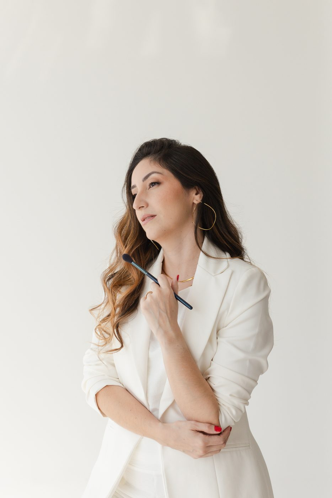
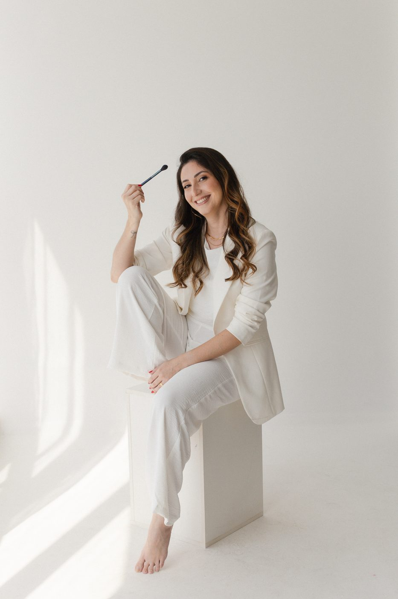
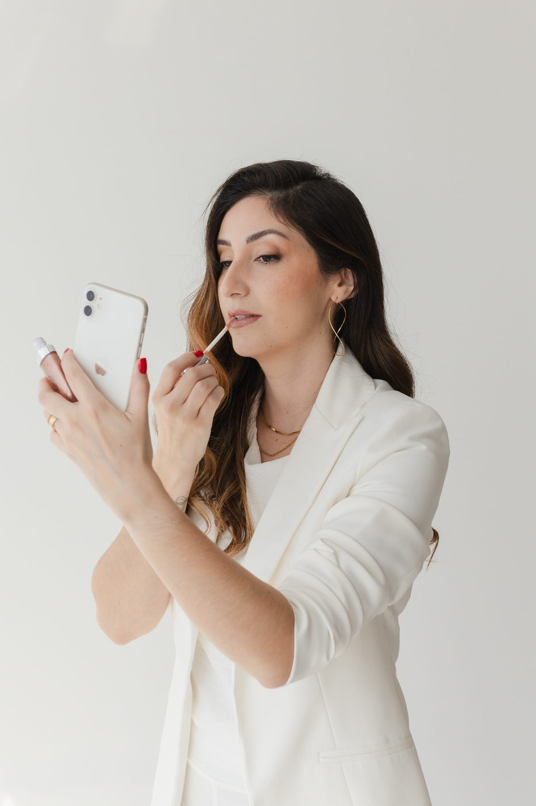
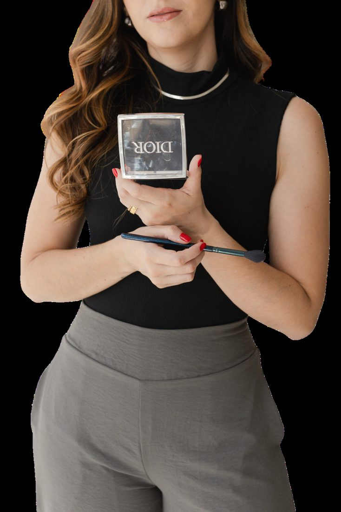
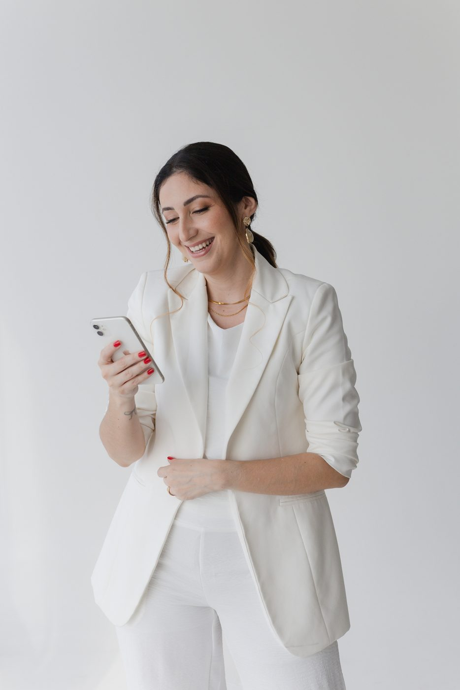
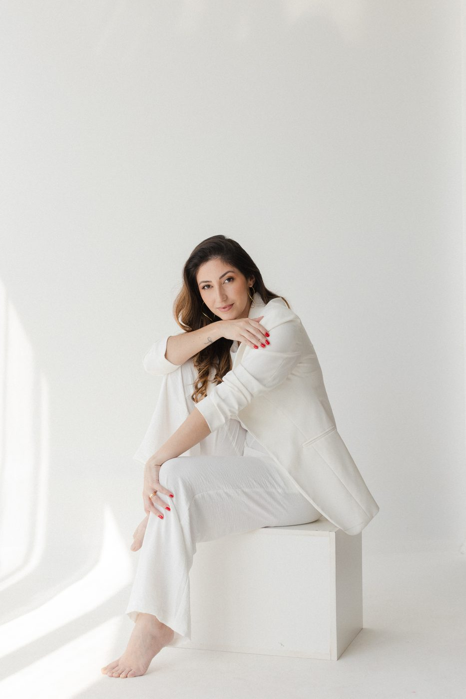
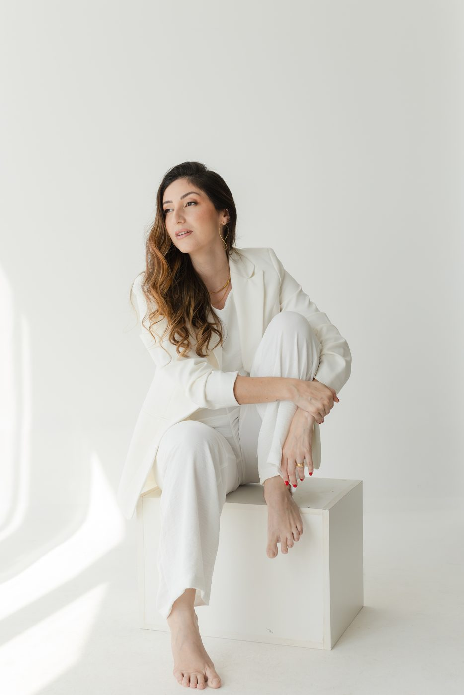

Para você
Curso de automaquiagem
Aprenda a valorizar o seu rosto com os produtos que você já tem: pele, olhos e boca para o dia a dia e para as ocasiões especiais.
Quero saberMaquiagem e penteado para noivas, debutantes, formandas e eventos. Uma pele que dura a festa inteira e um resultado que continua bonito nas fotos.

Cada maquiagem começa pela pele: preparação, produtos de alto padrão e acabamento pensado para a luz do evento e para a câmera.
Pacotes completos de maquiagem e penteado, com teste antes do grande dia. Todos podem ser adaptados ao que você imagina para o seu casamento.

Uma beleza leve e elegante, que traduz a idade e a personalidade de cada menina para a festa e o ensaio de 15 anos.
Maquiagem que aguenta a colação, a festa e a madrugada, sem perder o brilho nas fotos.
Casamentos, aniversários, eventos e ensaios. Com modelagem, escova ou penteado, do jeito que a ocasião pede.
Maquiagem delicada e adequada para crianças de até 8 anos, para daminhas e festas em família.
Produções criativas para ensaios, campanhas e eventos temáticos. Cada projeto é desenhado sob encomenda.
Dez anos de atendimento transformados em método. Aulas práticas, com os produtos certos e a técnica explicada passo a passo.

Aprenda a valorizar o seu rosto com os produtos que você já tem: pele, olhos e boca para o dia a dia e para as ocasiões especiais.
Quero saber
Técnicas de pele, olhos e durabilidade para atender noivas, debutantes e eventos com segurança e acabamento de alto padrão.
Quero saber
Acompanhamento individual para quem quer construir uma imagem forte na maquiagem: posicionamento, portfólio e presença nas redes.
Quero saber

“Uso o meu talento para realçar a beleza de cada mulher que senta na minha cadeira.”
Maquiadora em São Luís, Julliany atende noivas, debutantes, formandas e mulheres que querem se sentir lindas num dia especial. O cuidado começa antes do pincel: entender o evento, a luz, o vestido e quem você é.
Hoje, além dos atendimentos, ela forma novas profissionais e ensina mulheres a se maquiarem com confiança.

Atendimento no Gran Village Eldorado, no Turu, ou no local que você escolher, em São Luís e fora da cidade, com toda a estrutura de iluminação.
Datas de sábado e de alta temporada costumam fechar com antecedência. Garanta a sua com tempo.
Data, horário, local e o tipo de produção que você quer.
A Julliany indica o serviço ou o pacote ideal para você.
O agendamento é confirmado com um sinal; para noivas, também com contrato.
Cabelo lavado e seco naturalmente, e o resto é com a gente.
Sim. O atendimento pode ser no estúdio, no Turu, ou no local que você escolher. Para domicílio e eventos fora de São Luís, é cobrada uma taxa de deslocamento.
Com o cabelo lavado e seco naturalmente, porque não lavamos o cabelo no atendimento. Cabelos cacheados, extra longos ou muito volumosos podem ter acréscimo.
Transferência e Pix. No débito ou crédito há o acréscimo da maquininha.
O valor pago fica como crédito para você usar em outro atendimento.
Sim. O acompanhamento durante o evento pode ser incluído no pacote, consulte as condições.
Conte a data e o seu evento. A resposta chega pelo WhatsApp.
Falar com a Julliany